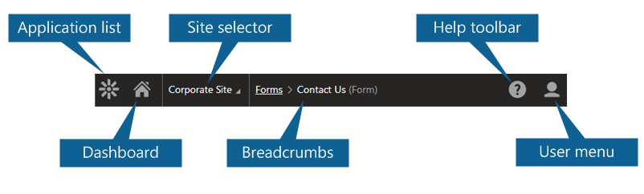
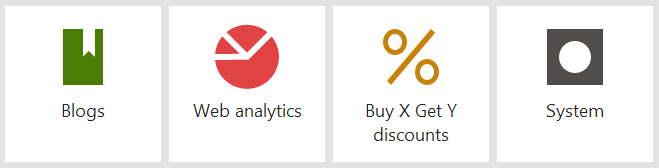
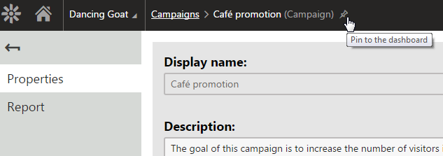
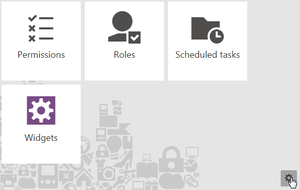

Using the Kentico interface
To access the Kentico administration interface, type /Admin after your site's domain into the browser address bar (for example http://mysite.com/admin)
A sign in page appears where you need to enter a username and password.
Default user name and password
The default user name is administrator. The default password is blank (no password).
It is highly recommended that you change the password before publishing the website to a live server.
Administration interface
All parts of the administration interface share the same header, which contains the following elements:

Overview of the Kentico administration interface header
|
Application list |
Opens a list of all applications that you are allowed to access, divided by category. Use the search bar to quickly find the application you need, or browse the categories. You can move between applications by pressing the up and down arrows on your keyboard. Press Enter to open the selected application. Click Live site at the bottom of the list to open a new browser tab with the live version of the current website. Keyboard shortcut: F2 |
|
Dashboard |
Returns you to the application dashboard. Keyboard shortcut: F4 |
|
Site selector |
Allows you to switch between different sites if your Kentico installation contains multiple sites. |
|
Breadcrumbs |
Displays the current application and your location within the application's interface. You can click on items in the breadcrumbs to navigate back within the interface structure. |
|
Help toolbar |
Provides links to relevant pages in the main Kentico documentation (based on the current application). Keyboard shortcut: F1 |
|
User menu |
Expands a menu where you can adjust the settings and preferences of your user account. Also allows you to Sign Out of the administration interface, which takes you to the live website as an anonymous visitor. |
Supported browsers
To learn which browsers are supported by the Kentico administration interface, see Kentico administration interface requirements.
Applications
The administration interface is separated into applications. Each application represents a group of related functionality. Applications allow you to perform various types of tasks, configure the system, and view information. For example, use the Pages application to manage the content, design, metadata and other configuration options of website pages.
Opening applications
Click the Kentico logo in the top left corner of the user interface, or press F2 on your keyboard.
The application list opens. The application list contains all applications that you are allowed to access, separated into categories.
Use the search bar to quickly find the application you need, or browse the categories.
Tip: use the up and down arrows on your keyboard to browse applications. Press Enter to open the selected application
Tip: You can open any number of applications at the same time in different browser tabs. Right-click the application and click Open link in new tab.
Using the application dashboard
The application dashboard provides quick access to your most frequently used applications and supported objects, such as Forms or Campaigns. Applications and objects on the dashboard have the form of tiles. The dashboard is the first page that opens when you sign into the administration interface. You can return to the dashboard from any part of the system by clicking the Home icon on the header.

Returning to the application dashboard
Live tiles on the application dashboard
Certain application tiles in Kentico work as Live tiles. This means that they provide information that may require the user's attention by displaying application data.
Live tiles on the application dashboard
The following Kentico applications and objects work as live tiles by default:
Content management
Blogs - displays the number of comments on the site waiting for approval.
My blogs - displays the number of comments waiting for the user's approval.
Forms - displays the number of forms submitted by users in the last 7 days.
Pending pages - displays the number of pages pending the user's approval.
Translations - displays the number of translation submissions waiting for import.
On-line marketing
A/B tests - displays the number of running A/B tests.
Contact management - displays the number of new contacts in the last 7 days.
My pending contacts - displays the number of contacts waiting for the user's action in a Marketing automation process.
Web analytics - displays the number of site visits in the last 7 days.
E-commerce
Buy X Get Y discounts - displays the number of running Buy X Get Y discounts.
Catalog discounts - displays the number of running catalog discounts.
Free shipping offers - displays the number of running free shipping offers.
Gift cards - displays the number of running gift card offers.
Order discounts - displays the number of running order discounts.
Product coupons - displays the number of running product coupon offers.
Configuration
Email queue - displays the number of e-mails that could not be sent.
Licenses - displays days left until license expiration.
System - displays the time since the last application restart.
Users - displays the number of registered users waiting for approval.
Developers can modify the information displayed on Live tiles and make other tiles display application data.
Adding applications and objects to the applications dashboard
Each Kentico user can individually configure the applications and objects they see on their application dashboard. Administrators can also predefine the application dashboard for particular roles.
Open an application.
(Optional) If you want to add a specific object to the dashboard, Edit the object the object that you want to pin (add) to the dashboard. See supported objects.
Click on the pin icon in the top bar.

Pinning an object to the application dashboardYou can now access the pinned application or object from the application dashboard.
Supported applications and objects
You can pin (add) all Kentico applications and the following objects to the application dashboard:
A/B tests
Banners
Campaigns
Contact groups
Forms
Marketing automation processes
Media libraries
MVT tests
Newsletters and email campaigns
Personas
Scores
Moving applications and objects on the application dashboard
To move a tiles on the dashboard, simply drag & drop them to a new place.
Removing applications and objects from the application dashboard
Click on Edit dashboard in the bottom-right corner of the application dashboard.

Editing the application dashboardDelete individual applications and objects from the dashboard.
Administration interface URL structure
You can open applications from the dashboard or application list, and bookmark the URLs.
The URL of the Kentico administration interface consists of the following parts:
Base URL: <site domain>/Admin/cmsadministration.aspx (opens the application dashboard by itself)
Fragment identifier that specifies the application: # hash mark followed by a globally unique identifier of the application (GUID)
For example: http://mysite.com/Admin/cmsadministration.aspx#5576826f-328b-4b53-9f4b-e877fabd4d63